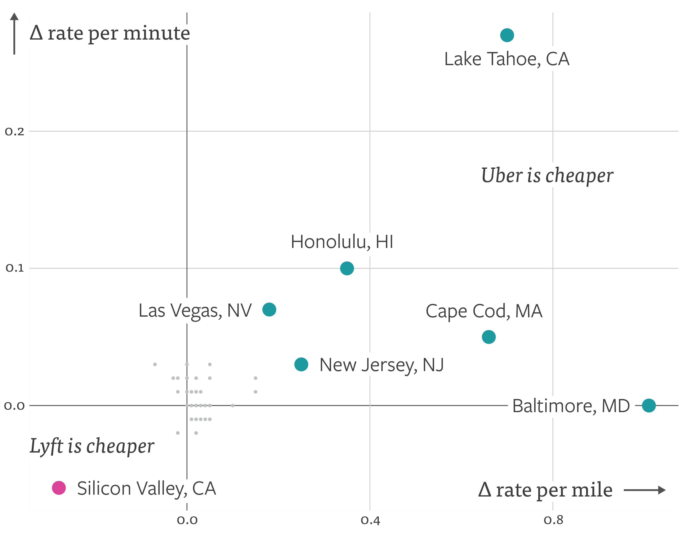

After Lyft charged me $3 more than Uber for an identical ride in the Twin Cities, I decided to investigate the discrepancy.
Was Uber always cheaper? In case of the Twin Cities, notreally, so this was probably just a fluke.
But this got me thinking, are there cities where one is consistently cheaper than the other?
To find out, I decided to plot \(\Delta rate\_per\_mile = uber\_rate\_per\_mile - lyft\_rate\_per\_mile\) against \(\Delta rate\_per\_minute = uber\_rate\_per\_minute - lyft\_rate\_per\_minute\).

Now let us focus on Quadrants I and IV since that is where a service dominates its competition on both \(\Delta rate\_per\_mile\) and \(\Delta rate\_per\_minute\).
Right off the bat, we see that Lyft is cheaper in Silicon Valley, CA. I'm not sure why, but I think Lyft is spending quite a bit here as an experiment to see whether it can dominate a geography and then hopefully expand this reach to the rest of the country.
As for Uber, four of the six markets it dominates in are holiday destinations which makes this a winner-take-all market due to relatively low supply vs high demand. As for why Uber dominates in New Jersey and Baltimore, I don't have a clear explanation but my guess would be that those cities have something lurking beneath on a local level.